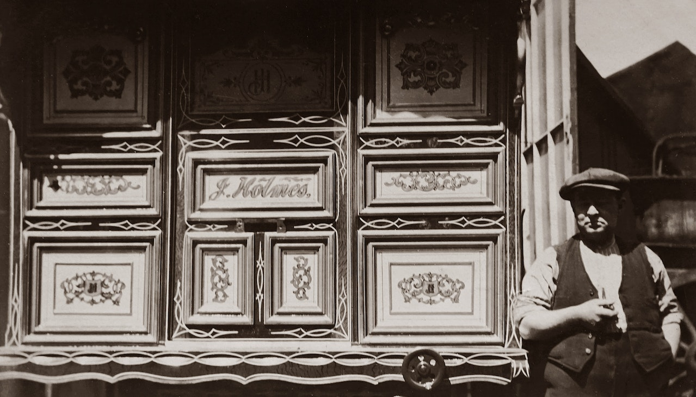

Nuestras Raíces
Amor, dedicación, experiencia... Estas tres palabras fueron puliéndose poco a poco entre Camila Santos (Río De Janeiro, Brasil) y Paco Ruíz (Granada). Estas tres palabras sembraron las raíces de nuestra cocina. Recetas de generaciones junto a las más innovadoras técnicas gastronómicas. Desde nuestra tradicional Feijoada Del Rio hasta nuestro exquisito Pulpo a la Gallega.
Nuestra Carta